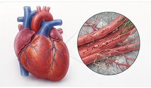
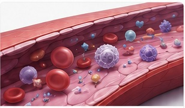
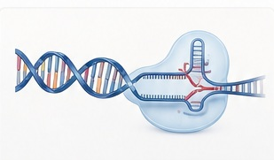
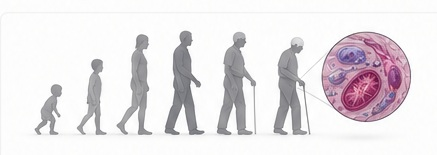
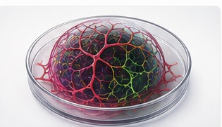

Cardiomyopathy & Heart Failure
Defining multicellular mechanisms of inherited and acquired cardiomyopathy, with a focus on endothelial–cardiomyocyte communication, remodeling, and heart failure.
Explore this programWe integrate patient-derived biospecimens, human iPSCs, multicellular cardiovascular models, genome engineering, and single-cell and spatial multi-omics to uncover mechanisms of cardiovascular disease.
Six connected research programs investigate cardiovascular disease across cells, tissues, and patients.

Defining multicellular mechanisms of inherited and acquired cardiomyopathy, with a focus on endothelial–cardiomyocyte communication, remodeling, and heart failure.
Explore this program
Investigating endothelial dysfunction, vascular remodeling, and cellular plasticity to identify pathways that support vascular repair.
Explore this program
Using patient-specific human models to understand cancer therapy-associated vascular and myocardial injury and investigate cardioprotective pathways.
Explore this program
Combining genome engineering and molecular profiling to test how genetic variants and regulatory programs influence cardiovascular function.
Explore this program
Investigating inflammatory and cellular features of cardiovascular aging, and their relationship to vascular integrity, cardiac function, and resilience.
Explore this program
Studying how environmental exposures and genetic susceptibility interact to alter endothelial function, inflammatory signaling, and cardiac biology.
Explore this programShared platforms, connected questions. Human iPSCs, engineered tissues, genome engineering, and single-cell and spatial multi-omics connect our research programs. Explore our platforms →
Scroll sideways to view all seven publications →
We combine complementary systems to connect patient observations with mechanisms that can be tested experimentally.
Clinical samples and patient phenotypes anchor our research in human disease.
Patient-derived and genome-engineered cells enable controlled experimental comparisons.
Organoids and engineered tissues reveal interactions among cardiovascular cell types.
Single-cell, spatial, and functional studies connect molecular programs with physiology.
Candidate interventions are evaluated in experimental models for their effects on disease phenotypes.
Interested in collaborating or joining the team? Explore our research platforms and training opportunities.
Join Us